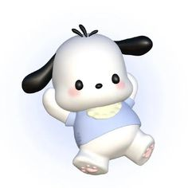

POCHACCO

Pochacco is a white dog with black floppy ears. He is known for his athleticism and curiosity. Pochacco enjoys playing soccer and going for walks. He is always eager to try new things and make new friends.
Pochacco is also known for his love of banana ice cream and his playful, energetic nature. His positive attitude and adventurous spirit make him a beloved character in the Sanrio universe.
Despite his playful demeanor, Pochacco is always there for his friends, offering support and kindness whenever needed. He represents the values of friendship, curiosity, and fun.